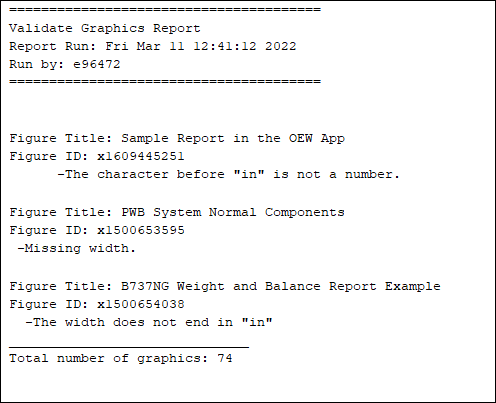
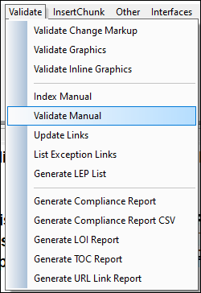

Overall goal of the validate manual function is to catch known errors and pitfalls.
function validateManual(){
#Validate manual for change markup, inline graphic @width, @revdate, graphic @width, broken/mismatched hyperlinks.
#eval "" output=* clears the output screen
revdatePROMPT="";
lepdatePROMPT="";
revLepdatePROMPT="";
graphicPROMPT="";
linksPROMPT="";
if(count($mastertocOID)>0) {
#prompt to capture user selection.
#Checkbox variable: 1=selected 0=not selected.
readvar -prompt 'Select which items to validate: ' \
-title 'Validate Manual Selection' \
-choice 'Revision Dates' -default 'Revision Dates' revdatePROMPT \
-choice 'LEP Dates' -default 'LEP Dates' lepdatePROMPT \
-choice 'Revdate / LEPdate Compare' -default 'Revdate / LEPdate Compare' revLepdatePROMPT \
-choice 'Graphics / Inlines' -default 'Graphics / Inlines' graphicPROMPT \
-choice 'Links' -default 'Links' -prompt 'Note: Change markup is always validated. ' linksPROMPT \
#if 'OK' is selected on the readvar prompt.
if(main::status==0) {
$validateErrorFound = "false";
#Heading information
eval "\n=======================================" output=>*
eval "\nValidate Manual Report " output=>*
eval "\n".$manualTitle output=>*
eval "\nRevision Number: ".$manualRevnumber output=>*
eval "\nRevision Date: ".$manualRevdate output=>*
eval "\nReport Run: ".time_date() output=>*
eval "\nRun by: ".username() output=>*
eval "\n" output=>*
#List which validate items are/not included in the report.
if(revdatePROMPT==0){eval "\n[ ] Revision Dates" output=>* } else{eval "\n[X] Revision Dates" output=>*}
if(lepdatePROMPT==0){eval "\n[ ] LEP Dates" output=>* } else{eval "\n[X] LEP Dates" output=>*}
if(revLepdatePROMPT==0){eval "\n[ ] Revdate / LEPdate Compare" output=>* } else{eval "\n[X] Revdate / LEPdate Compare" output=>*}
if(graphicPROMPT==0){eval "\n[ ] Graphics / Inlines" output=>* } else{eval "\n[X] Graphics / Inlines" output=>*}
if(linksPROMPT==0){eval "\n[ ] Links" output=>* } else{eval "\n[X] Links" output=>*}
eval "\n" output=>*
eval "\n=======================================\n" output=>*
if($changeMarkupFound == "true" || $inlineErrorFound == "true"){
eval "\nValidate Manual Error" output=>*
#valiate Change Markup start.
#If there is a single change markup error, state to run validate change markup.
if($changeMarkupFound == "true"){
eval "\n\n [Change Markup Error]\n" output=>*
eval " -".$changeMarkupResponse."\n" output=>*
eval " -".$changeMarkupError."\n" output=>*
$validateErrorFound = "true";
}
#valiate inline graphics
#if there is a single inline graphic error, state to run validate inline graphics.
if($inlineErrorFound == "true"){
eval "\n\n\n [Inline Graphics Error]\n" output=>*
eval " ".$InlineErrorResponse."\n" output=>*
eval " ".$InlineErrorMessage."\n" output=>*
$validateErrorFound = "true";
}
}
#Start reporting on the validation
$vPreviousSection = "";
$vLinkErrorFound = "";
$vGraphicErrorFound = "";
$vDateErrorFound = "";
$vlepDateErrorFound = "";
$vPreviousSectionTechStOID = "";
$vNamespaceError = ""
$vMarkupDateError = "";
#if errors exist, include line.
if(count($revdateOID) > 0 || count($vGraphicTOCOID) > 0 ||count($vLinkOID) > 0 || count($vChgMarkupRevdateOID) > 0 || count($vSectionNamespace)>0){
eval "\n---------------------------------------\n" output=>*
}
#Loop through mastertocoid array once
#mastertocOID contains OIDs of every section in the TOC.
for($eachmasterOID in $mastertocOID){
#If anything in revdateOID exists AND was selected in the prompt, start checking for OID matches.
#revdateOID contains the OIDs of every section with a revdate error.
if (count($revdateOID) > 0 && revdatePROMPT==1) {
$vDateErrorFound = "false"; #reset flag for every oid in array.
for(each_revdateOID in $revdateOID) {
#if the OID at revdateOID[] index matches the exact OID at mastertocOID[] index, an error is present. Set flag to true.
if($revdateOID[each_revdateOID] == $mastertocOID[$eachmasterOID]) {
$vDateErrorFound = "true";
$validateErrorFound = "true";
}
}
}
#lepdate check
if (count($lepdateOID) > 0 && lepdatePROMPT==1) {
$vlepDateErrorFound = "false"
for (each_lepdateOID in $lepdateOID) {
if ($lepdateOID[each_lepdateOID] == $mastertocOID[$eachmasterOID]) {
$vlepDateErrorFound = "true"
$validateErrorFound = "true"
}
}
}
#if anything in vGraphicTOCOID exists AND was selected in the prompt, start checking for OID matches.
#vGraphicTOCOID contains the OIDs of figures with width errors.
if (count($vGraphicTOCOID) > 0 && graphicPROMPT==1){
$vGraphicErrorFound = "false"; #reset flag for every OID in array.
for($eachvGraphic in $vGraphicTOCOID) {
#if the OID at vGraphicTOCOID[] index matches the exact OID at mastertocOID[] index, an error is present. Set flag to true.
if($vGraphicTOCOID[$eachvGraphic] == $mastertocOID[$eachmasterOID]) {
$vGraphicErrorFound = "true";
$validateErrorFound = "true";
}
}
}
#if anything in vLinkOID exists AND was selected in the prompt, start checking for OID matches.
#vLinkOID contains the OIDs of hyperlinks that are broken/mismatched.
if (count($vLinkOID) > 0 && linksPROMPT==1) {
$vLinkErrorFound = "false";
for ($eachvLinkOID in $vLinkOID) {
if($vLinkOID[$eachvLinkOID] == $mastertocOID[$eachmasterOID]) {
$vLinkErrorFound = "true";
$validateErrorFound = "true";
}
}
}
#if anything in ChgMarkupRevdateOID exists AND was selected in the prompt, check for OID matches
#ChgMarkupRevdateOID contains OIDs of sections with revdates that do not match book revision date.
if (count($vChgMarkupRevdateOID) > 0 && revLepdatePROMPT==1) {
$vMarkupDateError = "false";
for ($eachvMarkupDate in $vChgMarkupRevdateOID) {
if($vChgMarkupRevdateOID[$eachvMarkupDate] == $mastertocOID[$eachmasterOID]) {
$vMarkupDateError = "true";
$validateErrorFound = "true";
}
}
}
#if anything in vSectionNamespace exists, start checking for OID matches.
#vSectionNamespace contains the OIDs of hyperlinks that are broken/mismatched.
if(count($vSectionNamespace)>0) {
$vNamespaceError = "false";
for($eachNamespace in $vSectionNamespace) {
if($vSectionNamespace[$eachNamespace] == $mastertocOID[$eachmasterOID]) {
$vNamespaceError = "true";
$validateErrorFound = "true";
}
}
}
#if there was an error found, eval the name of the section.
#mastertocLOCATION contains the name of each section in the toc.
if ($vDateErrorFound == "true" || $vlepDateErrorFound == "true" || $vGraphicErrorFound == "true" || $vLinkErrorFound == "true" ||$vMarkupDateError == "true" || $vNamespaceError == "true"){
eval "\n\n".$mastertocLOCATION[$eachmasterOID] output=>*
}
#display graphic width error info
if($vGraphicErrorFound == "true") {
eval "\n \[Graphic Error]" output=>*
for($eachvGraphic in $vGraphicTOCOID) {
#if there are matching OIDs, eval the name of the section once.
if($mastertocOID[$eachmasterOID] == $vGraphicTOCOID[$eachvGraphic]) {
#title of the current section with error.
$vSectionTitle = $vGraphicTitle[$eachvGraphic]
#identical to vSectionTitle.
$vCurrentSection = $vSectionTitle
#only eval section title if current and previous section names are different.
#otherwise, the same section title evals multiple times.
if($vCurrentSection != $vPreviousSection) {
eval $vGraphicTitle[$eachvGraphic]."\n" output=>*
eval $vGraphicOID[$eachvGraphic]."\n" output=>*
}
#set vCurrentSection to previous title
$vPreviousSection = $vCurrentSection;
eval $vGraphicError[$eachvGraphic]."\n" output=>*
}
}
}
#output revdate and lepdate error header
if ($vDateErrorFound == "true" || $vlepDateErrorFound == "true" || $vMarkupDateError == "true") {
eval "\n \[Date Errors]" output=>*
}
#output revdate errors
if ($vDateErrorFound == "true") {
#check missing revdate, then print correct revdate heading
if (oid_attr($mastertocOID[eachmasterOID], "revdate") == "") {
eval "\n revdate: _____".oid_attr($mastertocOID[$eachmasterOID],"revdate")."\n" output=>*
}
if (oid_attr($mastertocOID[eachmasterOID], "revdate") != "") {
eval "\n revdate: ".oid_attr($mastertocOID[$eachmasterOID],"revdate")."\n" output=>*
}
#error msg output
for (each_revdateOID in $revdateOID) {
if ($revdateOID[each_revdateOID] == $mastertocOID[eachmasterOID]) {
eval " -".$revdateErrors[each_revdateOID]."\n" output=>*
}
}
} #end if vDateErrorFound true
#output lepdate errors
if ($vlepDateErrorFound == "true") {
#check missing lepdate, then print correct revdate heading
if (oid_name($mastertocOID[eachmasterOID]) == "chapter" && oid_attr($mastertocOID[eachmasterOID],"lepdate") == "" ) {
eval "\n lepdate: _____".oid_attr($mastertocOID[$eachmasterOID],"lepdate")."\n" output=>*
}
if (oid_name($mastertocOID[eachmasterOID]) == "chapter" && oid_attr($mastertocOID[eachmasterOID],"lepdate") != "" ) {
eval "\n lepdate: ".oid_attr($mastertocOID[$eachmasterOID],"lepdate")."\n" output=>*
}
for(lepdateOIDCount in $lepdateOID) {
if($lepdateOID[lepdateOIDCount] == $mastertocOID[eachmasterOID]) {
eval " -".$lepdateErrors[lepdateOIDCount]."\n" output=>*
}
}
} #end if vlepDateErrorFound true
#end output revdate and lepdate error info
#display if change markup exists and revdate does not match lepdate
if($vMarkupDateError == "true") {
eval "\n Incorrect Revdate" output=>*
for($eachvMarkupDate in $vChgMarkupRevdateOID) {
if($vChgMarkupRevdateOID[$eachvMarkupDate]==$mastertocOID[$eachmasterOID]) {
eval "\n revdate: ".$vChgMarkupRevdateRevDate[$eachvMarkupDate]." lepdate: ".$vChgMarkupRevdateLEPDate[$eachvMarkupDate] output=>*
eval "\n -".$vChgMarkupRevdateError[$eachvMarkupDate]."\n" output=>*
}
}
}
#display link error info.
if($vLinkErrorFound == "true") {
for($eachvLinkOID in $vLinkOID) {
if($vLinkOID[$eachvLinkOID]==$mastertocOID[$eachmasterOID]) {
#mismatch link error
if($vLinkErrorType[$eachvLinkOID] == "[MISMATCH]") {
eval "\n [Mismatch Link]\n" output=>*
eval " -Current Text: ".$vLinkCurrentText[$eachvLinkOID]."\n" output=>*
eval " -Correct Text: ".$vLinkCorrectText[$eachvLinkOID]."\n" output=>*
}
#broken link error
if($vLinkErrorType[$eachvLinkOID] == "[BROKEN]") {
eval "\n [Broken Link]\n" output=>*
eval " -Current Text: ".$vLinkCurrentText[$eachvLinkOID]."\n" output=>*
}
}
}
}
#display namespace error information
if($vNamespaceError == "true") {
for($eachNamespace in $vSectionNamespace) {
if($vSectionNamespace[$eachNamespace] == $mastertocOID[$eachmasterOID]) {
eval "\n [Namespace Error]\n" output=>*
eval " -Missing namespace\n" output=>*
}
}
}
}
#display broken link count if count is greater than 1 and Links was selected in prompt.
if($brokenLinkCount>=1 && linksPROMPT==1) {
eval "\n\n Broken Links: ".$brokenLinkCount output=>*
}
#display mismatched link count if count is greater than 1 and Links was selected in prompt.
if($misMatchedLinkCount>=1 && linksPROMPT==1) {
eval "\n\n Mismatched Links: ".$misMatchedLinkCount output=>*
}
#display if there are no validation errors
if($validateErrorFound == "false") {
eval "\n\n No validation errors found" output=>*
}
}
}
else {
message "Run Index Manual."
}
}
This validation function checks all graphics for known errors. A Technical Writer can validate their graphics in a matter of seconds.
An example of a correct width or height is width=6.5in or height=680px
Validate Graphics checks for the following errors:
function validateGraphics()
{
delete($oid_allGraphics);
delete($oid_GParent);
eval "\n\n=======================================" output=>*
eval "\nValidate Graphics Report " output=>*
eval "\nReport Run: ".time_date() output=>*
eval "\nRun by: ".username() output=>*
eval "\n=======================================\n" output=>*
#start the graphic count
$allGraphicCount = 0;
#find all the graphics in the viewed document and put in an array.
oid_find_children(oid_first(), oid_allGraphics, "graphic")
#count how many graphics are in oid_allGraphics
$graphCount = count(oid_allGraphics)
#Create No Errors flag. Shows every time as either "No errors were found" or "(blank)"
$noErrors = "\n\n\nNo errors were found.";
#for every graphic in oid_allGraphics
for (eachGraphic in oid_allGraphics) {
$allGraphicCount++; #increment the number of graphics
#get the name and if of parent figure title
$graphicParent = oid_parent(oid_allGraphics[eachGraphic])
$findGraphicTitle = oid_content(oid_child(graphicParent), 0x80)
if (findGraphicTitle == "") {
$graphicTitle = "No title found";
}
else{
$graphicTitle = findGraphicTitle;
}
#$graphicTitle = oid_content(graphicParent, 0x80)
$findFigurexID = oid_attr(graphicParent, "id")
if (findFigurexID == ""){
$figurexID = "No ID found";
}
else{
$figurexID = $findFigurexID;
}
#.Create a flag called ErrorFound. Resets each flag to nothing for each graphic.
$errorFound = "false";
$errorWidthMissing = "";
$errorINFound = "";
$errorPeriods = "";
$errorSpaces = "";
$errorHeightMissing = "";
$errorBeforeIN = "";
#.test if the width is set. Continue if there is something in the width attribute.
if(oid_attr(oid_allGraphics[eachGraphic], "width")) {
#-----------------------------------------
#Check if the last two characters are "in"
#-----------------------------------------
#Create a string with the width attribute.
$attWidthString = oid_attr(oid_allGraphics[eachGraphic], "width");
#Create a string of just the last two characters in the width.
$lastTwo = substr($attWidthString,(length($attWidthString)-1),(length($attWidthString)))
#.If the last two characters are not "in", set flag to true and eval error; noErrors sets to blank.
if ($lastTwo != "in"){
$errorINFound = "-The width does not end in \"in\" ";
$errorFound = "true";
$noErrors = "";
}
#-------------------------------
#Check for 2 or more periods
#-------------------------------
#set periods to 0 for each new graphic.
$periods = 0;
#Create a string of just the last two characters in width.
$attWidthString2 = oid_attr(oid_allGraphics[eachGraphic], "width");
#gsub looks for all periods, replaces each with an asterick, and returns number of astericks. #p = the new string (Ex: 6*5in). Must use single quotes and \, otherwise will not work.
$periods = gsub('\.','x', $attWidthString2, $p)
#if there is more than one period, set flag to true and eval the error; noErrors sets to blank.
if ($periods > 1){
$errorPeriods = "-More than one period";
$errorFound = "true";
$noErrors = "";
}
#-------------------------
#Check for any spaces
#-------------------------
$spaces = 0; #set spaces to 0 for each new graphic.
#gsub finds all spaces, sets each space to #, and returns number of #s. $s saves the new string.
$spaces = gsub(' ','#', $attWidthString2, $s)
#if there are any spaces, set flag to true and eval the error; noErrors sets to blank.
if ($spaces >= 1){
$errorSpaces = "-Space present";
$errorFound = "true";
$noErrors = "";
}
#----------------------------
#Check for missing @height
#----------------------------
#check the height attribute for each graphic
$eachHeight = (oid_attr(oid_allGraphics[eachGraphic], "height"))
if ($eachHeight == "") {
$errorHeightMissing = "-Missing height";
$errorFound = "true";
$noErrors = "";
}
#-----------------------------------------------------
#Check if the last character before "in" is a number.
#Example: 5.0in = valid, 5.in = invalid
#-----------------------------------------------------
if ($lastTwo == "in"){
#get the single character before IN
$attWidthString3 = oid_attr(oid_allGraphics[eachGraphic], "width");
$widthText = substr(attWidthString3, 1, (length(attWidthString3)-2))
local $lastChar = substr(widthText, (length(widthText)), (length(widthText)))
#eval $lastChar output=>*
#.If the last character is not a number, set flag to true and eval error; noErrors sets to blank.
local i; #i = integers 0-9.
local $countINnoError = 0; #count if lastChar is equal to any integer 0-9
for (i = 0; i <= 9; i++) {
#turns i (0-9) into a string. Able to compare integers to characters
$strI = "".i."";
#if the last char is equal to integers 0-9.
if($lastChar == $strI) {
$countINnoError++;
}
}
#if lastChar did not equal integers 0-9
if ($countINnoError == 0) {
$errorBeforeIN = "-The character before \"in\" is not a number.";
$errorFound = "true";
$noErrors = "";
}
}
}
#-----------------------------------
#Check for missing width attribute.
#-----------------------------------
#If there is not a width set, set flag to true and eval the error; noErrors sets to blank.
else {
$errorWidthMissing = "-Missing width.";
$errorFound = "true";
$noErrors = "";
}
#If the errorFound flag is set to true on any above, eval the error.
if($errorFound == "true"){
eval "\n\n\n\n\n\nFigure Title: ".$graphicTitle output=>*
eval "\nFigure ID: ".$figurexID."\n" output=>*
eval $errorWidthMissing output=>*
eval $errorINFound output=>*
eval $errorPeriods output=>*
eval $errorSpaces output=>*
eval $errorHeightMissing output=>*
eval $errorBeforeIN output=>*
}
}
#eval the noErrors flag every time.
eval $noErrors output=>*
#.Display total number of graphics.
eval "\n______________________________" output=>*
eval "\nTotal number of graphics: ".$allGraphicCount output=>*
}
The following is an example of the Validate Grahpics Report.
The figure name, figure ID, and the error is included to find and correct the graphic errors.
I have developed multiple Validate Manual functions.
This menu shows the validation and reporting functions that are available.
